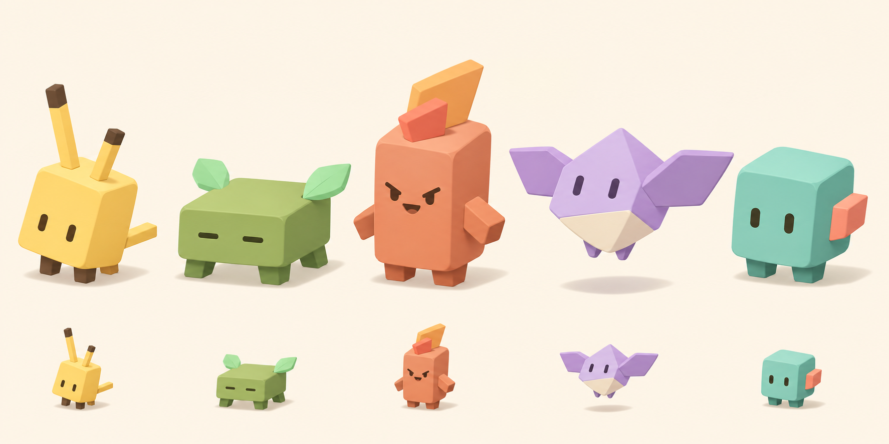

Кубические существа · v1
Художественный образец #161. Пять разных силуэтов; настоящие рамки 32, 48, 96 и 160 CSS px. Это уменьшенные фрагменты концепта, ещё не готовые прозрачные иконки.
Проба Idle / моргания
Только бирюзовый вариант. Прозрачная проба ещё имеет цветную кайму и небольшую нестабильность формы: для поставки не принята. Можно остановить цикл и сравнить кадры.
Кадр 1 / 4
Исходный концепт целиком

Без привязки к видам и без изменения установленной оболочки. Статус и происхождение · Промпты генерации.